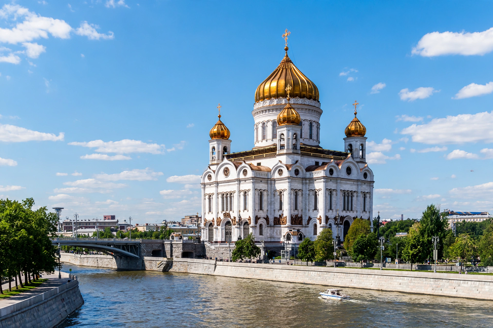

From Wikipedia, the free encyclopedia
| Russian Orthodox Church | |
|---|---|
| Abbreviation | ROC |
| Classification | Eastern Orthodox |
| Orientation | Russian Orthodoxy |
| Primate | Patriarch Kirill of Moscow |
| Headquarters | Danilov Monastery, Moscow, Russia |
| Founder | Traditionally St Andrew; historically Vladimir the Great (988) |
| Origin | 988, Christianization of Kievan Rus' |
| Independence | 1448 (de facto); recognized 1589 |
| Members | c. 100 million in Russia; over 160 million claimed worldwide |
| Official website | patriarchia.ru |

The Cathedral of Christ the Saviour in Moscow, the tallest Orthodox Christian church in the world.
The Russian Orthodox Church (ROC; Russian: Russkaya pravoslavnaya tserkov), also called the Moscow Patriarchate, is an autocephalous Eastern Orthodox Christian church. It has over 194 dioceses and is the largest of the Eastern Orthodox churches, claiming more than half of all Eastern Orthodox Christians worldwide. Its primate is the Patriarch of Moscow and all Rus', a position held since 2009 by Patriarch Kirill.
Christianity was introduced into Kievan Rus' in 988, when Prince Vladimir the Great was baptized in Chersonesus and ordered the mass baptism of the inhabitants of Kiev in the Dnieper River. The church was initially a metropolitanate of the Ecumenical Patriarchate of Constantinople.
After the Mongol invasion of 1237–1240 devastated Kiev, the metropolitan's seat moved north, first to Vladimir and then to Moscow. In 1448, Russian bishops elected Metropolitan Jonah without Constantinople's consent, effectively establishing autocephaly. In 1589 Metropolitan Job became the first Patriarch of Moscow.
The reforms of Patriarch Nikon in the 1650s–1660s provoked the Raskol (schism) of the Old Believers. Peter the Great abolished the patriarchate in 1721, replacing it with the Most Holy Synod, a state-controlled body. The patriarchate was restored in 1917 under Patriarch Tikhon.
Under the Soviet Union the church suffered severe persecution: tens of thousands of clergy and laypeople were executed, and most churches were closed or destroyed. A limited revival was permitted during the Second World War. After 1991 the church experienced a large-scale revival, rebuilding thousands of churches including the Cathedral of Christ the Saviour, demolished in 1931 and reconsecrated in 2000.
The church is governed by the Holy Synod chaired by the Patriarch. Its supreme authority is the Local Council, which includes bishops, clergy and laity. The church is organized into exarchates, metropolitanates, dioceses, parishes and monasteries.
In 2018 the Moscow Patriarchate broke communion with the Ecumenical Patriarchate over the granting of autocephaly to the Orthodox Church of Ukraine. Following Russia's invasion of Ukraine in 2022, the Ukrainian Orthodox Church declared its independence from Moscow.